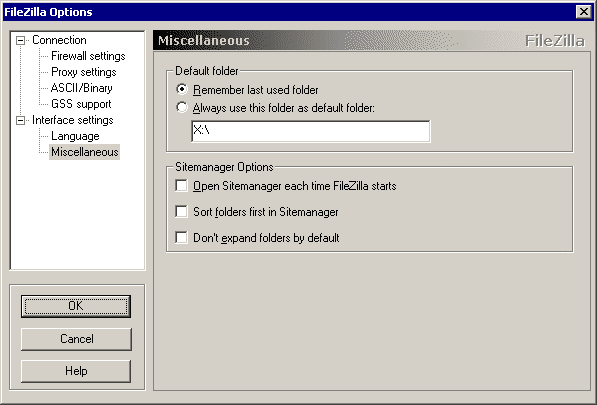

Miscellaneous
Overview
On this page you can set some miscellaneous interface settings.

Default folder
Here you can set which local folder will be used if FileZilla starts. If you select "Remember last used folder", FileZilla uses the folder that it used the last time you worked with FileZilla. If you select "Always use this folder as default folder", FileZilla will always switch to this folder each time FileZilla starts.
Open Site Manager each time FileZilla starts
If selected, the Site Manager will be opened each time you start FileZilla.
Sort folders first in Sitemanager
If selected, the Site Manager menu tree will be sorted with all folders appearing above FTP sites.
Don't expand folders by default
If selected, the Site Manager will not automatically expand its folders if the Site Manager is opened.